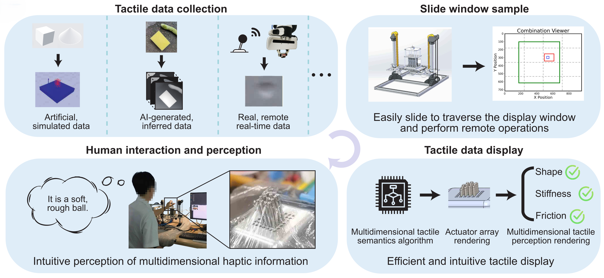
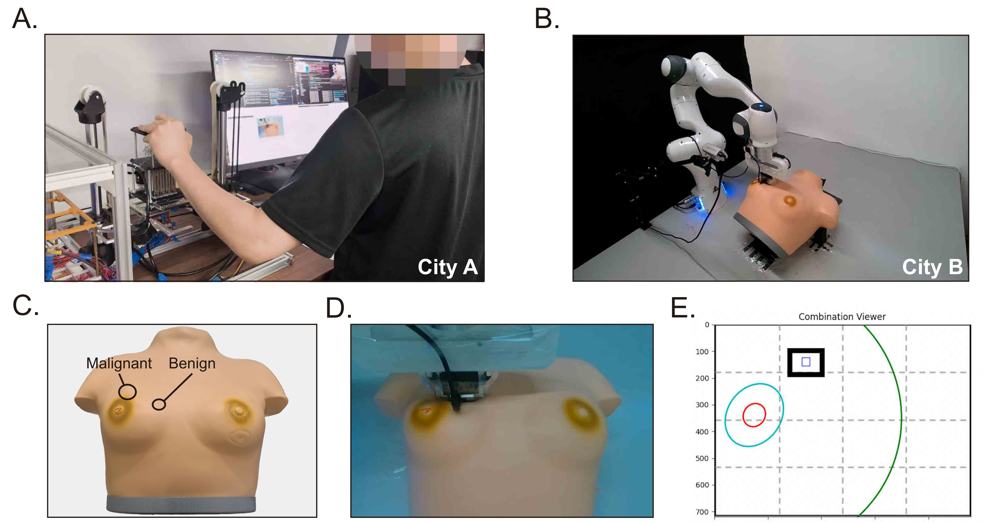
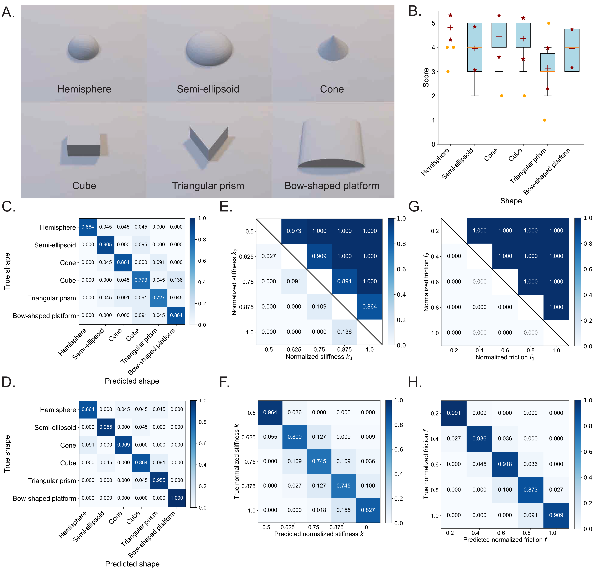
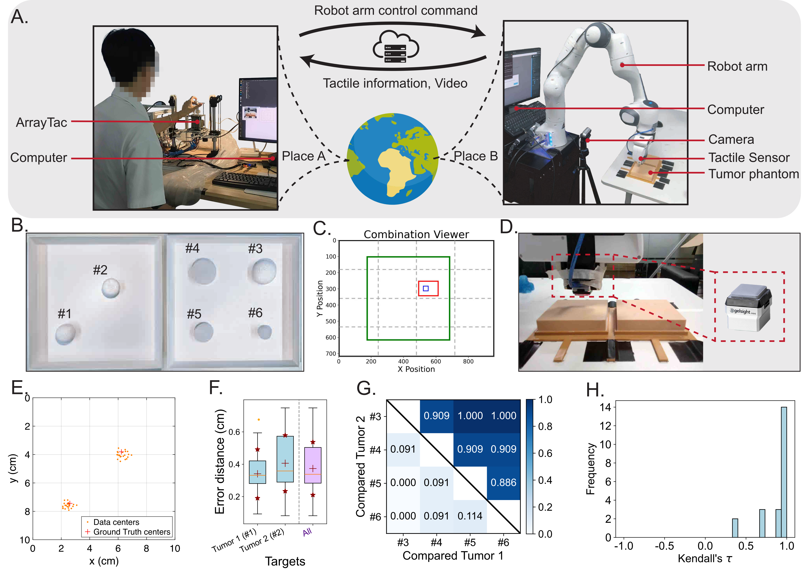
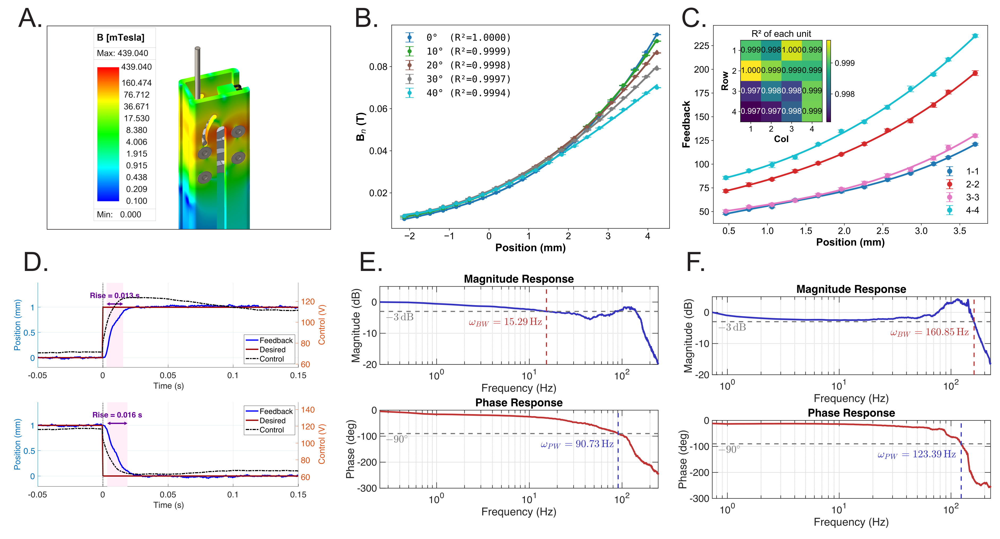
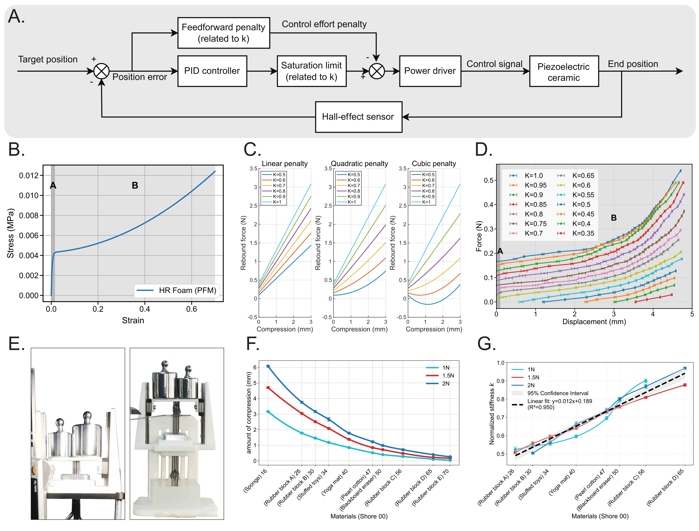

ArrayTac:
A Closed-loop Piezoelectric Tactile Platform for Continuously Tunable Rendering of Shape, Stiffness, and Friction
Anonymous Authors
Abstract
Human touch depends on the integration of shape, stiffness, and friction, yet existing tactile displays cannot render these cues together as continuously tunable, high-fidelity signals for intuitive perception. We present ArrayTac, a closed-loop piezoelectric tactile display that simultaneously renders these three dimensions with continuous tunability on a 4 by 4 actuator array. Each unit integrates a three-stage micro-lever amplifier with end-effector Hall-effect feedback, enabling up to 5 mm displacement, greater than 500 Hz array refresh, and 123 Hz closed-loop bandwidth. In psychophysical experiments, naive participants identified three-dimensional shapes and distinguished multiple stiffness and friction levels through touch alone without training. We further demonstrate image-to-touch rendering from an RGB image and remote palpation of a medical-grade breast tumor phantom over 1,000 km, in which all 11 naive participants correctly identified tumor number and type with sub-centimeter localization error. These results establish ArrayTac as a platform for multidimensional haptic rendering and interaction.

Figure 1. This panel illustrates the system workflow, showing the data pipeline from multi-source tactile data collection to haptic rendering.
Movie 1. System demonstration. This video provides a comprehensive overview of ArrayTac, a tactile display capable of simultaneously rendering shape, stiffness, and friction with continuous tunability. It highlights the system's zero-shot capability by showing that the rendered multidimensional tactile cues are intuitive and can be readily interpreted by naive users without prior training. The video then presents remote palpation tasks for tumor localization and property discrimination. Finally, it introduces two representative application frameworks: Tac-Anything, which extracts and renders multidimensional tactile semantics from images, and Tele-Touch, which enables remote palpation and interaction across long distances.
Cross-city Remote Palpation over More Than 1,000 km
Movie 2. Cross-city remote palpation over more than 1,000 km using ArrayTac. This video provides the full demonstration of the remote palpation segment shown in Movie 1. It illustrates a teleoperation setup in which a user in City A controls a robotic arm in City B, located over 1,000 km away, to palpate a medical-grade breast tumor training phantom while receiving real-time haptic feedback through ArrayTac. The video simultaneously displays the remote camera view, the ArrayTac 4 × 4 height map, and the combination viewer for the 2D probe trajectory, and concludes with a participant's hand-drawn result showing successful identification, localization, and classification of the benign and malignant tumors in the phantom.

Figure 2. Cross-city remote breast tumor palpation experiment and quantitative user experience evaluation. (A) The local teleoperation setup in City A, where a naive participant operates ArrayTac. (B) The remote site in City B (over 1,000 km away), where a robot arm performs real-time palpation with a latency below 0.1 s. (C) The medical-grade breast tumor training phantom with an embedded malignant and a benign tumor. (D) The screenshot of the real-time video viewed by participants during the experiment. (E) The GUI provides continuous positional information for the end effector.
Participants' Drawings in the Breast Tumor Localization Task
Experiments and Applications
Movie 3. Experiments on tactile perception and representative applications. This video presents the main experimental results of ArrayTac. It first shows the psychophysical experiments on shape, stiffness, and friction perception. It then summarizes the experiments and representative results of Tac-Anything and Tele-Touch frameworks. Finally, it presents the overall user experience evaluation based on the USE and SUS questionnaires.

Figure 3. Participant experiments on shape, stiffness, and friction perception. (A) 3D models used in the shape perception experiment. (B) Zero-shot performance scores of participants during their first use of the device without any prior training (n = 22). In the box plot of (B), the central mark indicates the median, and the red '+' symbol indicates the mean. The bottom and top edges of the box represent the 25th and 75th percentiles, respectively. The whiskers extend to the maximum and minimum values excluding the outliers, which are plotted individually using the orange points. (C) Confusion matrix of shape identification when participants were provided only with the list of candidate options (n = 22). (D) Confusion matrix of shape identification after participants completed training (n = 22). (E) Pairwise preference heatmap for stiffness discrimination, illustrating the proportion of trials where k2 was judged stiffer than k1 (n = 22). (F) Confusion matrix of classification across different stiffness levels (n = 22 × 5). (G) Pairwise preference heatmap for friction discrimination, illustrating the proportion of trials where f2 was judged rougher than f1 (n = 22 × 5). (H) Confusion matrix of classification across different friction levels (n = 22 × 5).
Figure 4. The Tac-Anything framework: architecture, experimental validation, and performance. (A) An overview of the Tac-Anything framework, which extracts and renders multidimensional tactile semantics (shape, stiffness, and friction) from a single RGB image. (B) The eight real-world objects with diverse tactile properties used in the user study. (C) The two photographic scenes used as the ground truth. (D) Average sketching maps of the Haptic Scene Sketching task (n = 22). Participant sketches, including their normalized annotations for shape, stiffness, and friction, are compared against the ground truth tactile maps for both scenes. (E) Quantitative analysis of participant performance presented as box plots (n = 22). The left plot shows the Intersection over Union (IoU) for the Haptic Scene Sketching task for each object and the result for all objects ('all'). The right plot shows the object placement accuracy for the Object Identification and Placement task across four conditions: Scene 1, Unrestricted Placement (S1UP); Scene 1, Constrained Placement (S1CP); Scene 2, Unrestricted Placement (S2UP); and Scene 2, Constrained Placement (S2CP). (F) Average placement maps for the Object Identification and Placement task (n = 22), aggregating the final objects and positions chosen by all participants.

Figure 5. Experimental setup and results for the Tele-Touch remote palpation task. (A) The architecture of the Tele-Touch system. Operators can use the ArrayTac interface locally to manipulate robotic arms located anywhere in the world and perceive remote tactile information. Data streams are transmitted through a cloud server to enable real-time interaction. (B) Internal design of the two tumor phantom tissue models. The left phantom was used for the "Tumor Localization" task, while the right phantom was used for the "Tumor Severity Ranking" task. (C) The graphical user interface (GUI) for system control. (D) Screenshot of the real-time video viewed by participants during the experiment, showing a GelSight tactile sensor mounted on the robotic arm's end effector. (E) Visualized results for the tumor localization task (n = 22). (F) Quantitative analysis of localization error (n = 22). The box plot shows the distance between participant-identified centers and the ground truth for two targets and the aggregated data. (G) Pairwise preference heatmap for the tumor severity ranking task (n = 22). Each cell value represents the percentage of participants who perceived "Compared Tumor 2" (Y-axis) as more severe/harder than "Compared Tumor 1" (X-axis). (H) Distribution of Kendall's tau (τ) coefficients for the severity ranking data (n = 22).
Participants' Drawings in the Tumor Localization Task
Participants' Drawings in the Tumor Severity Ranking Task
Participants' Drawings in the Haptic Scene Sketching Task (Scene 1)
Participants' Drawings in the Haptic Scene Sketching Task (Scene 2)
Participants' Placements in the Object Identification and Placement Task (Three Objects)
Participants' Placements in the Object Identification and Placement Task (Four Objects)
System Overview
Movie 4. System overview and hardware architecture. This video first introduces the overall system architecture of ArrayTac, showing how tactile information is collected, sampled, and rendered in real time. It then presents the hardware platform, including the drive circuit, the XYZ sliding platform, the display array, and the upper computer, together with the signal and control flow between these subsystems. The video next highlights the mechanical design of each actuator unit, including the piezoelectric actuator, the three-stage micro-lever amplification mechanism, and the Hall-effect feedback module. Finally, it explains the circuit architecture and information flow that enable closed-loop displacement control.
Methods
Movie 5. Methods for multidimensional tactile rendering. This video explains the core methods that enable ArrayTac to render shape, stiffness, and friction. It first presents end-effector position sensing based on a Hall-effect sensor and the closed-loop control strategy for shape rendering, then introduces the nonlinear control method for stiffness rendering together with its calibration to Shore 00 hardness. Finally, it shows the vibrotactile method used to render friction through programmable amplitude and frequency modulation.

Figure 6. Unit control method and performance. (A) Electromagnetic field simulation process performed using Ansys EDT. (B) Simulated normal magnetic flux density (Bz) detected by the Hall sensor as a function of end-effector position at various sensor installation angles (0° to 40°). The solid lines are cubic polynomial fits to the data, with the coefficient of determination (R²) for each fit shown in the legend. The consistently high values demonstrate the model's robustness against potential assembly misalignments of the sensor (n = 5). (C) Experimentally measured relationship between Hall-effect sensor feedback and end-effector displacement for each unit. For clarity, only diagonal units are plotted, while the heatmap reports the coefficient of determination (R²) for all 16 units (n = 3). For (B) and (C), data points are shown as mean ± s.d., where n represents the number of samples. (D) Step response of a single display unit. (E) Bode plot of a single display unit under open-loop control. (F) Bode plot of a single display unit under PID closed-loop control. For (E) and (F), ω-3dB denotes the -3 dB magnitude frequency and ω-90 denotes the -90 phase-lag frequency.

Figure 7. Unit stiffness control method and performance. (A) Block diagram of the stiffness control algorithm. (B) Strain-stress curve of HR foam derived from a mathematical model. (C) MATLAB-simulated displacement-force curves of the display unit under different penalty orders. (D) Experimentally measured displacement-force curves of the display unit under different normalized stiffness parameters (n = 8). (E) Experimental setup for aligning normalized stiffness with measured Shore 00 stiffness. (F) Compressive deformation and corresponding Shore 00 stiffness of common household objects under different applied normal forces (n = 5). (G) Relationship between normalized stiffness k and Shore 00 stiffness (n = 5).
Hardware and Control
These figures summarize the hardware design of the actuator array and platform, together with the measured control performance that supports high-fidelity multidimensional tactile rendering.
Figure 8. System design and schematics. (A) Exploded view of the actuator array.
(B) Exploded view of the XYZ sliding stage. (C) Assembled view of the interactive platform.
(D) The circuit schematic for an individual ArrayTac unit, comprising the control circuit and the
power tree.